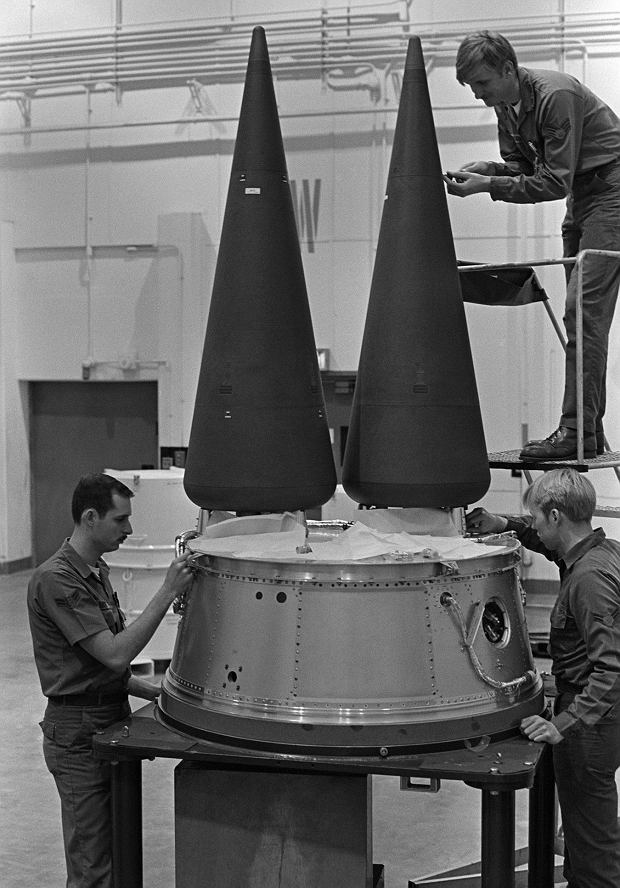
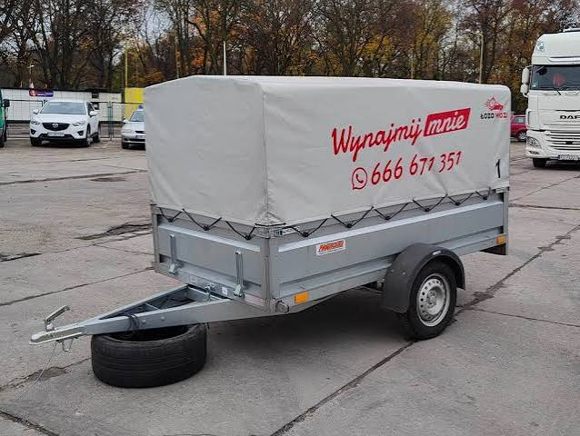
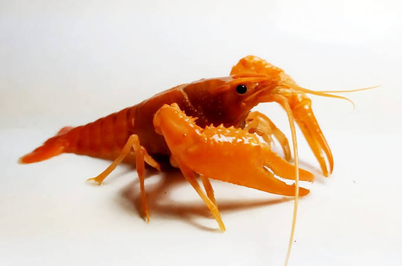

Harmonogram wydarzenia
| Godzina | Atrakcja | Miejsce |
|---|---|---|
| 10:00 | Badanie wstępne | Gabinet 1 |
| 12:00 | USG | Gabinet 7w |
| 13:00 | Konsultacja wyników | Gabinet 21w |
Prowadzący:
Drużyny:

Karta Głowicy

Karta Przyczepka

| Godzina | Atrakcja | Miejsce |
|---|---|---|
| 10:00 | Badanie wstępne | Gabinet 1 |
| 12:00 | USG | Gabinet 7w |
| 13:00 | Konsultacja wyników | Gabinet 21w |


